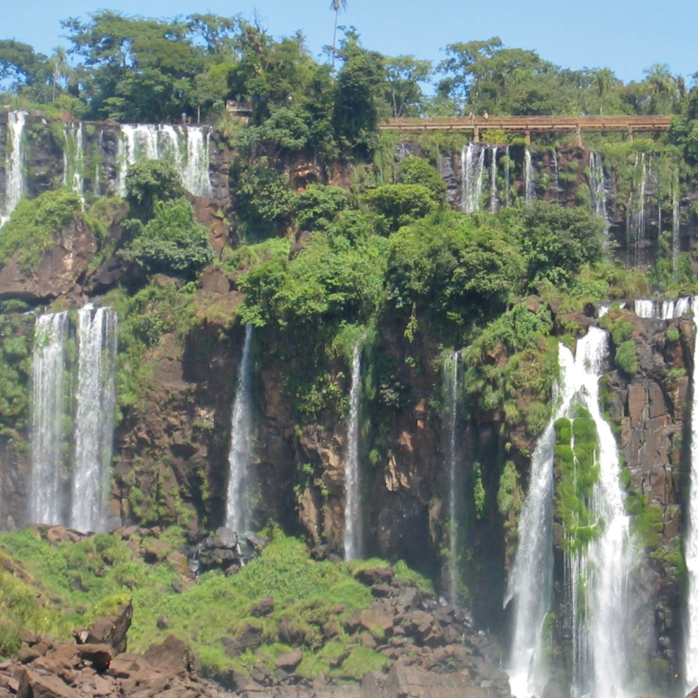

O Paraná é um estado de natureza monumental e infraestrutura moderna, servindo como um elo vital entre o Sul e o restante do Brasil. Famoso por abrigar as Cataratas do Iguaçu, uma das maravilhas naturais do mundo, o estado também se destaca pelo planejamento urbano inovador de sua capital, Curitiba, referência internacional em sustentabilidade e transporte. Com uma economia impulsionada por um agronegócio altamente tecnificado e pelo Porto de Paranaguá, o território paranaense combina a herança cultural de imigrantes europeus e asiáticos com a força de suas cooperativas, oferecendo paisagens que variam das praias do litoral às florestas de araucárias e aos vastos campos do interior.

Voltar